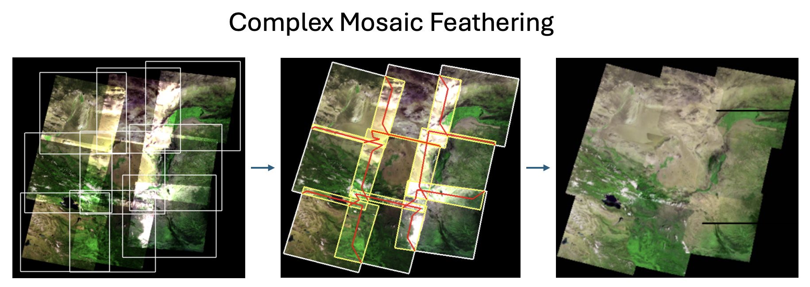
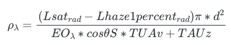
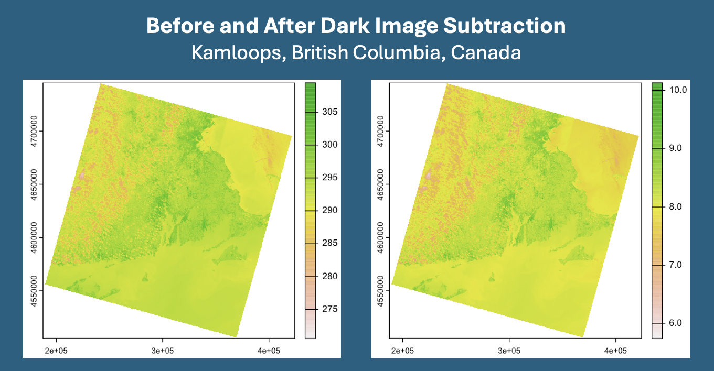

4 Week 3
4.1 1. Corrections and Enhancements
Over the course of the week, we discussed how to transform raw, remotely sensed data into a product we can use for analysis. This transformation process is know as enhancing or correcting data.
In academic terms, “Correction” describes the process of removing or reducing the effects of various factors distort the imagery or data. These factors can include atmospheric effects and sensor noise among others.
The three main correction types are detailed below, along with their common solutions:
4.1.0.1 Geometric & Topographic Error
Adjusts for image distortions due to the Earth’s rotation, sensor tilt, and curvature, ensuring accurate spatial positioning.
A common method for geometric correction is orthorectification. This fixes distortions in aerial photos by aligning them with ground truth, correcting for camera angles and terrain. This method essentially ensures every point on a photo maps to the right spot on Earth, ensuring accurate measurements and analysis. This step is key for reliable map-making and data overlay from satellite imagery.
Source: Abdul Basith
4.1.0.2 Atmospheric Distortion
Removes the effects of atmospheric gases and particles on the recorded signal to accurately reflect the Earth’s surface reflectance. This is essentially wiping away the haze from satellite imagery. Atmospheric particles and gases can often blur or change the colors in an image. The goal is to make the image show the Earth’s surface as if the atmosphere wasn’t messing with the view.
Regression is often used to correct atmospheric errors. It allows you to model the relationship between satellite data with known ground values, then applying this model to adjust the entire image for atmospheric distortions. Below is a Landsat image of the Three Gorges Area, China before and after correction for haze.
Source: Zhaohua Chen
4.1.0.3 Radiometric Calibration
Adjusts the digital image data to correct for sensor noise and inconsistencies, ensuring uniform brightness and contrast across the image.
While, I wouldn’t consider this to an error - you can correct for radiometric variations by applying a calibration equation that converts Digital Number (DN) values to spectral radiance (using gain and bias parameters). This helps to standardise image brightness across datasets.
4.2 2. Data Joining
In Earth observation, data joining involves combining multiple satellite images to create a single image. This is an extremely useful method, as most large areas cannot be captured in a single satellite pass.
One common technique for data joining is called mosaic feathering. Seen below:

Source: Yun Gao
Similar to feathering in panoramic photography, mosaic feathering in satellite imagery involves overlapping adjacent images and blending their edges. This blending ensures that the transition between images is smooth, without visible seams or abrupt changes in color and texture that can occur due to differences in lighting, angle of capture, or atmospheric conditions at the time each image was taken.
4.3 Applications: Atmospheric Correction using Dark Object Subtraction
Jensen’s description of Atmospheric Correction in Introductory digital image processing: a remote sensing perspective (2015), provides a good overview of the concept of Dark Object Subtraction (DOS). The idea is that the darkest spot shouldn’t really have any brightness and should have a value of zero, so if it does appear slightly bright, that is likely due to atmospheric haze.
I’ve chosen an image of my favourite park near my hometown, Kamloops, British Columbia, Canada to conduct DOS on.
The formula for doing such is:

I started with an analysis of the Surface Reflectance. The first image below, is the raw Landsat image. The second image is the same image after applying the DOS method.

After applying the DOS method, this is what we are left with. While the differences are subtle, the image is noticeably clearer. The first image is more green, there is far less variation in colour and the mountainous region on the left hand side of the image is more distinguished making it easier to identify features.
4.4 Reflections
Prior to this course, I had little exposure to remotely sensed data. Personally, going through the tedious process of enhancing raw remotely sensed data highlighted the complexity of tools like Google Earth. I will never again take for granted the ability to zoom in on a location and casually scroll around the globe.
In the practical, I focused on dealing with atmospheric correction using DOS. I chose this simply because it was the method I technically understood, the least. It required a deep dive into the complexities of how light interacts with the Earth’s atmosphere and affects satellite imagery. After taking a look at the two images above, I initially saw little difference, but when looking again, the distinction between the two is quite evident (as detailed above).